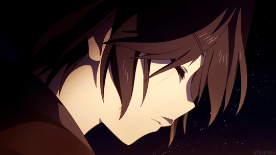

Code Geass
É sobre um estudante com o poder do seu Geass, um olho poderoso que faz qualquer pessoa seguir as ordens de quem o possui, lidera uma rebelião para recuperar o Japão dos domínios da Britannia e criar um mundo gentil no qual sua irmã sempre sonhou em viver.
observação - nos filmes de Code Geass, uma pessoa que morreu no anime, está viva, mas nada que atrapalhe a sua experiência =D

Akame Ga Kill
Acompanhamos o jovem adolescente Tatsumi decide ingressar na Night Raid, um grupo de guerreiros secretos que lutam contra o império. O motivo de sua luta é a indignação ao ver o descaso dos governantes com o país e as injustiças do mundo devido à corrupção e pobreza extrema.

Boku No Hero Academia
A história se passa em um mundo onde quase toda a população possui algum poder sobre-humano, Izuku Midoriya é um dos poucos casos de pessoas comuns. Mas esse não é o maior de seus problemas. Exatamente por ser desprovido de qualquer poder, Izuku sofre constantemente nas mãos de seus colegas de classe.

Charlotte
Num mundo alternativo, uma pequena porcentagem das crianças são capazes de manifestar seus superpoderes ao atingir a puberdade. A história é ambientada na Academia Hoshinoumi e acompanha os membros do conselho estudantil, que ajudam os outros alunos com problemas decorrentes das suas habilidades.
Dragon Ball
A série segue as aventuras do protagonista, Son Goku, desde sua infância até a idade adulta enquanto ele treina artes marciais e explora o mundo em busca de sete esferas conhecidas como as Esferas do Dragão, que convocam um dragão que concede um desejo quando reunidas.
Assistir 1º temporada (Dragon Ball)
Assistir 2º temporada (Dragon Ball Z)
Assistir 3º temporada (Dragon Ball Super)
Facultativo:
Assistir Dragon Ball Super Movie: Broly

Ao No Exorcist
A história é sobre um rapaz chamado Okumura Rin, que tem dentro dele o sangue de um demônio. Um dia, surge repentinamente na sua frente o demônio Satan que diz ser seu pai e planeja levá-lo até o mundo dele. Nesse instante, o pai adotivo de Rin, que é um famoso exorcista, arrisca sua vida para salvá-lo e acaba morrendo.
Assistir Continuação (adaptando o arco Impure King)

Mob Pyscho 100
A história acompanha o jovem Shigeo Kageyama, um garoto aparentemente comum estudante do ensino médio apelidado de Mob. Apesar de muito discreto, Mob é na verdade um esper, um tipo poderoso de médium, tendo experienciado o alcance de seus poderes psíquicos desde muito novo.

One Punch Man
Conta a história de Saitama, um super-herói extremamente poderoso, que se entediou com a ausência dos desafios nas suas lutas contra o mal e procura encontrar um oponente digno.

Saiki Kusuo No Psi Nan
A história acompanha o Saiki Kusuo, um adolescente com poderes de telecinese, telepatia, teletransporte, pirocinese, invisibilidade e muito mais. Ele é tão poderoso que usa dois inibidores de poder que ficam como antenas em sua cabeça. Quando ele retira um, seus poderes aumentam absurdamente.

Toaru Majutsu No Index
A história acompanha Touma Kamijou, um estudante da Cidade Acadêmica cuja habilidade, a Imagine Breaker, possui o poder de anular quaisquer outros poderes usando sua mão direita, mas esse poder faz com que sua sorte também seja anulada, fazendo com que seja alvo de diversas furadas e problemas de azar.
Existem varios animes de toaru, a ordem a seguir é a cronológica
1 - Assistir Toaru Kagaku no Railgun
2 - Assistir Toaru Kagaku no Railgun S
3 - Assistir Toaru Majutsu no Index
4 - Assistir Toaru Toaru Kagaku no Accelerator
5 - Assistir Toaru Majutsu no Index II
6 - Assistir Toaru Kagaku no Railgun T
7 - Assistir Toaru Majutsu no Index III